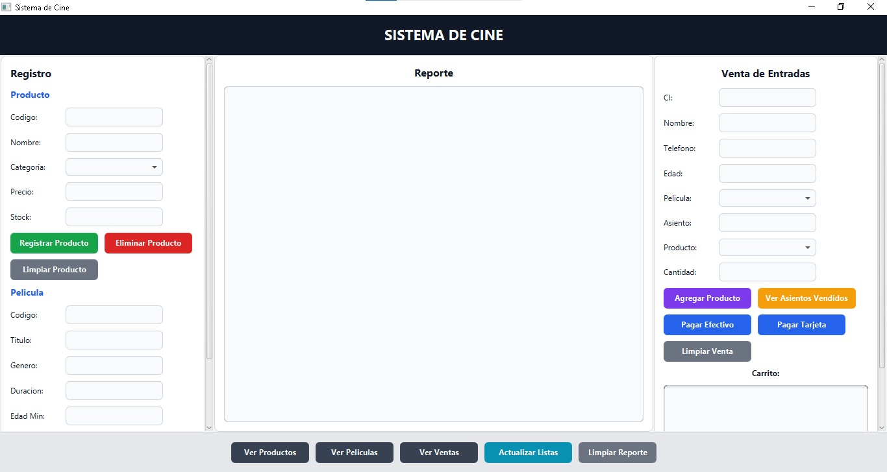

Sistema de Gestión de Cine
Rol: Desarrollador del sistema.
Tecnologías: Java, JavaFX y archivos para persistencia de datos.
Logro: Sistema funcional para registrar películas, productos y ventas de un cine.
Rol: Desarrollador del sistema.
Tecnologías: Java, JavaFX y archivos para persistencia de datos.
Logro: Sistema funcional para registrar películas, productos y ventas de un cine.
Rol: Diseñador y desarrollador de la base de datos.
Tecnologías: SQL, MySQL e interfaz gráfica.
Logro: Base de datos relacional para gestionar clientes, mascotas y servicios veterinarios.
Rol: Desarrollador del programa.
Tecnologías: C++ y Linux.
Logro: Simulación funcional de comunicación entre procesos usando pipes.
Rol: Desarrollador de la lógica del juego.
Tecnologías: C++ y programación modular.
Logro: Juego funcional organizado mediante funciones modulares.
